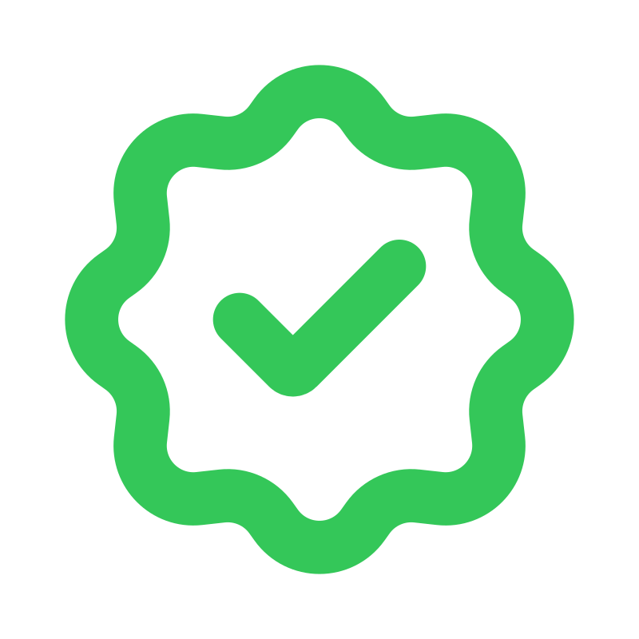

Your modern
watch companion.
Lumed is a companion app for watch enthusiasts. Track your collection, log daily wear, measure accuracy, and sync time precisely — all in one place.
iPhone & iOS 17+
What's inside
Everything a collector needs
Focused tools built around how watch enthusiasts actually think about their pieces.
Watch Box
Your full collection in a clean grid. Add photos, reference numbers, case details, and notes. Sort by brand, most worn, or recently added. Favorites always float to the top.
Wear Log
Record which watch you wore each day, with optional occasion notes. Wear multiple watches in one day — Lumed tracks them all.
Accuracy Tracking
From a single photograph of your watch face, Lumed will compare the time on your watch to NTP and calculate daily drift in a matter of seconds. Track whether it's gaining or losing over time and whether it's time to re-set.
Stats
See your collection at a glance — most worn pieces, neglected watches, and monthly activity across 30 days, 90 days, or all time. Know which watch needs a wrist day and which one is a clear favorite.
Time Sync
A live, NTP-synced clock accurate to the millisecond allows you to set your watch with guaranteed precision. Add world time zones to set your GMT complication easily.
Movement Specs
Define each watch's movement specs to measure accuracy compared to expectations. COSC, METAS, Rolex Superlative, and other common movement types are default or add custom specs.
NTP-synced precision
Atomic-accurate time on your wrist
Lumed syncs directly with NIST time servers via NTP, giving you a reference clock accurate to the millisecond. Set your watch to true atomic time — no guessing, no drift from your phone's clock. Every measurement in Lumed is anchored to this source of truth.
Photo-based measurement
Know your drift, down to the second
Beyond a professional timegrapher, the best way to track your watch's accuracy is through real wear checkpoints. Lumed will help you determine any time drift and does the math for you - just take a photo, verify the current time, and see how well your watch is running. Outputs are relative to your defined specification and Lumed will remind you to reset the baseline depending on the power reserve of your watch.

In SpecStay in the loop
Lumed is in active development. Sign up to get notified when we launch and receive beta invites.
This is not a newsletter sign up. You are just signing up for interest in beta testing.